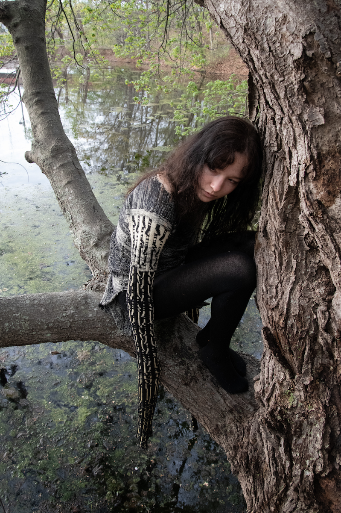
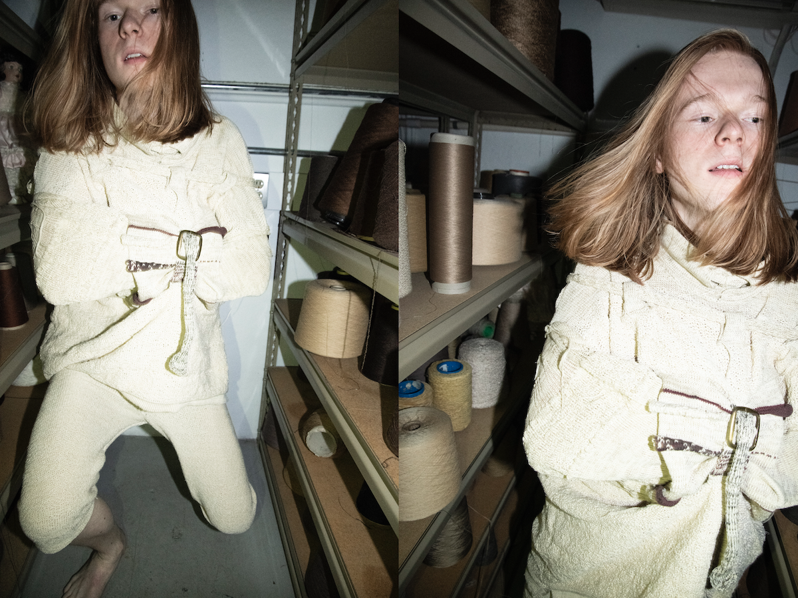
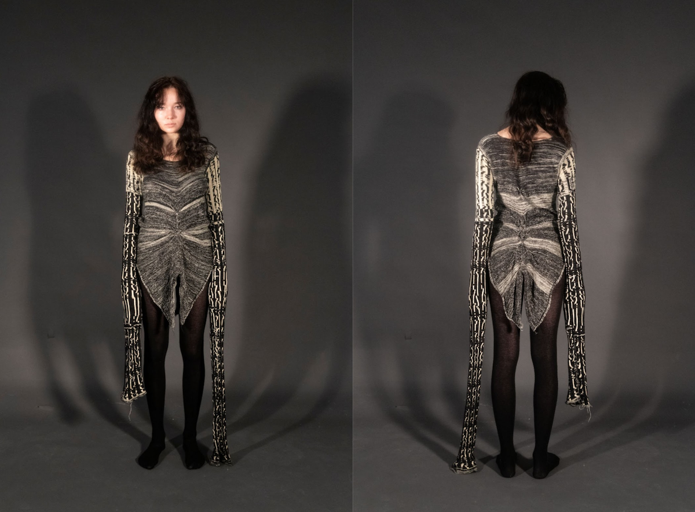
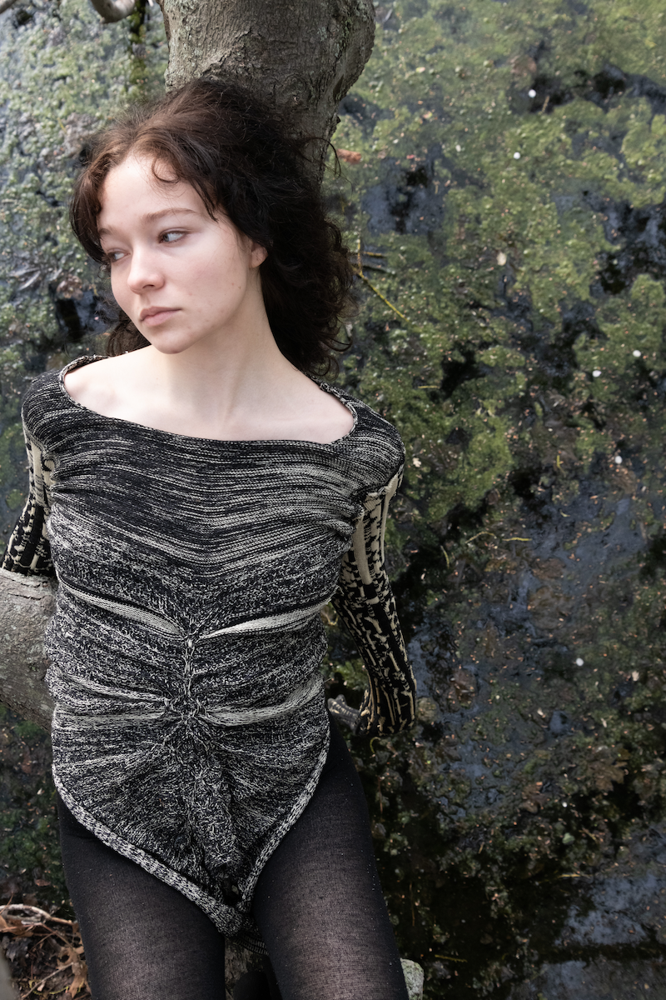
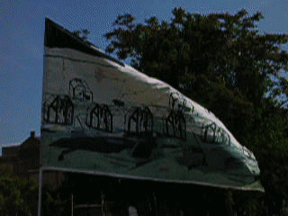
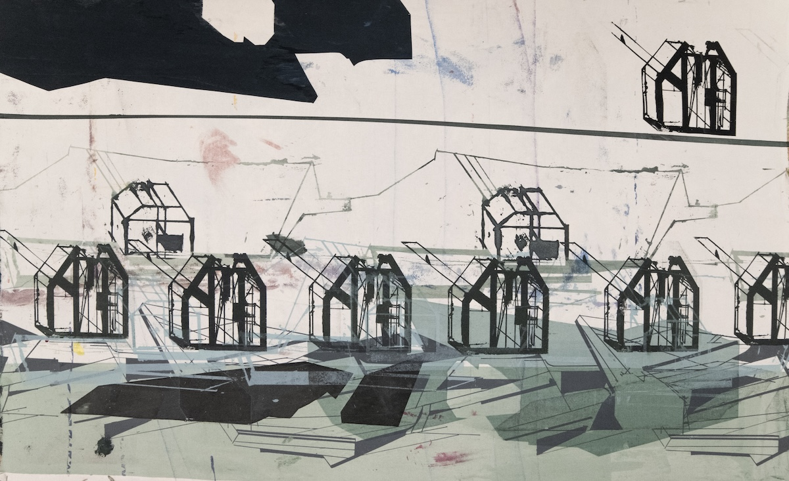

Strait Jacket and Pants

Meduim: Cotton yarn, steel d rings, recycled belt buckles.
Class: Machine Knitting (Wintersession)
Risd EFS, 2020
Modeled by Martin Baggarly
Knitted Top

I explore the generative and textural elements of sound design with the serge modular synth and translate those elements into pattern using various machine knitting techniques.
Meduim: Cotton and wool blend
Class: Machine Knitting Techniques, Spring
Risd Textiles, May 2021
Modeled by Nicole Strubinski

Bunker Flag

Meduim: Cotton
Class: Frabric Silkscreening, Spring
Risd Textiles, May 2021


updated 03/20/24 – femi.fleming@gmail.com